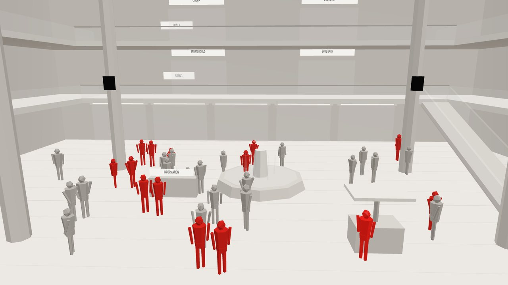
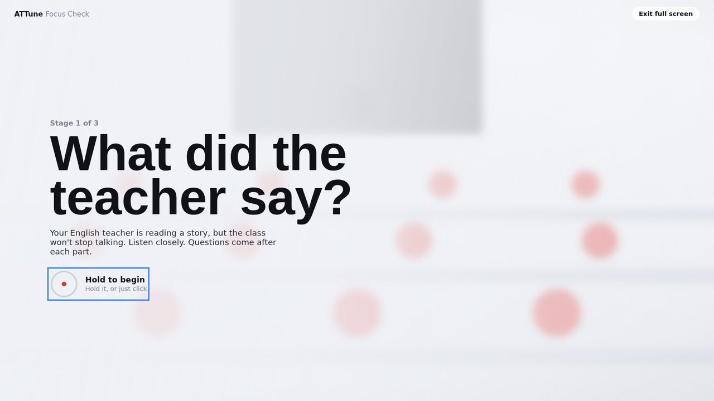
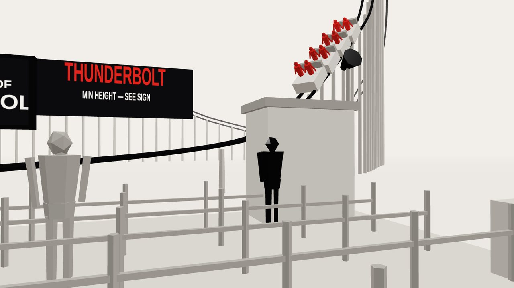
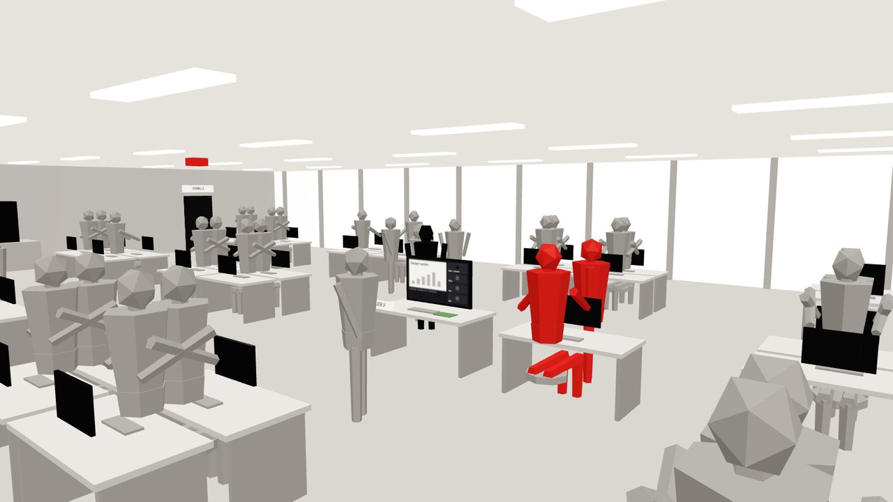
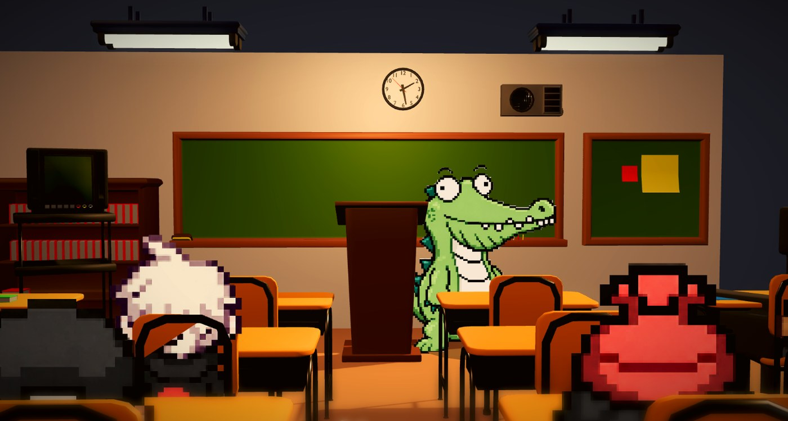

Stay tuned in when the world gets noisy.
Attune is a game where children practise listening, holding on to instructions, and responding to what matters while distractions compete for their attention.
Attention practice that children actually want to open.
Our mission is to make attention practice engaging and accessible for children. Through play, Attune helps children practise staying focused, listening to instructions, and following them when the world gets noisy, whether or not they have an ADHD diagnosis.
Listening takes more than hearing.
A classroom, a busy home, or a playground rarely stays quiet. Children may need to pick out an instruction, keep it in mind, and act on it while other sounds and events compete for attention. Attune turns those moments into short, playful challenges that can be practised at a child’s own pace.
- 01
Find the message
Notice the voice or cue that matters among competing sounds.
- 02
Stay with it
Keep attention on instructions across a longer sequence.
- 03
Hold the instruction
Remember what to do long enough to respond.
- 04
Choose a response
Ignore a tempting decoy and act on the relevant instruction.
These are proposed game targets, not claims that playing Attune has already improved children’s daily functioning.
Short audio-led missions, with feedback straight away.
Children play brief audio-led missions. Each mission introduces an instruction, gives the child a clear action, and offers immediate feedback. As they progress, tasks can ask them to listen for longer or respond while more sounds compete.
Rather than describe that at length, the three builds below let you hear it for yourself.
Hear what a session asks a child to do.

Focus Check
Three rooms, about five minutes. A story read over rising classroom chatter, instructions that get interrupted, then something long and dull while gossip competes. It sets itself to the player’s age.
Take the check
Beta levels
The work-in-progress build of Attune, hosted on itch.io. This is where new mission ideas go first and where early feedback from players comes back to us.
Open on itch.io
Listening levels
Five five-minute places — a mall, a theme park, a football field, a science lab and an office — plus a skills mode that trains noise filtering, instruction tracking and focus stamina one at a time.
Play the levelsWhat the game will eventually look like.
The playable builds are grey-box prototypes: they exist to get the listening right first. The finished game keeps the same missions and dresses them in warm, characterful rooms — a classroom with a crocodile teacher, pixel-art classmates, and plenty going on at the edges of the frame to pull attention away.

A room worth sitting in
Characters children want to listen to, so staying with a long instruction feels like part of the story rather than a test.
Distraction you can see
The things competing for attention are drawn into the scene, not just mixed into the audio, so a child can tell what pulled them away.
The same listening underneath
Missions, scoring and difficulty carry straight over from the prototypes you can play today.
Built for children who find listening hard — diagnosis or not.
Attune is being designed for children who find listening and staying with instructions difficult, including children with ADHD and children without a diagnosis. Parents and educators can use this site to understand the game and see what a session asks a child to do.
Attention differs from child to child, and nothing here assumes every child’s needs are the same.
The research gives Attune a starting point for design. It does not establish that this game treats ADHD.
What informs Attune.
Research describes attention as involving several processes, including staying with a task, selecting what matters, and shifting focus when needed. Attune uses these ideas to design listening games that add competing sounds and instructions in manageable steps.
Evidence about attention training is mixed, and we would rather say so here than oversell it. We plan to assess whether children enjoy the tasks, improve on new listening challenges, and show any meaningful changes outside the game before making stronger claims.